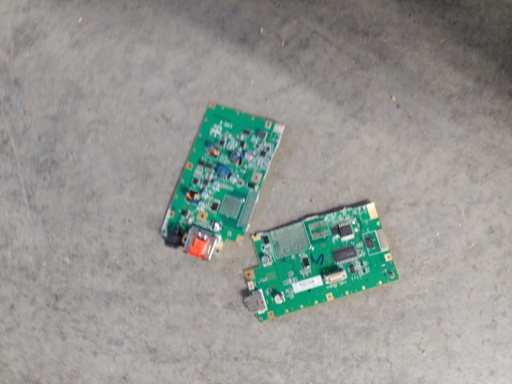

Pimp my mini
Welcome to Pimp my mini! This website is a group of written guides to help you get the most out of your not-so-good purchase of a Wii mini by adding hardware modifications that will make it totes cool and ultra nice n' stuff. There are some ground rules that need to be set for your own safety and to ensure that you don't absolutely butcher the heck out of your poor little console:

So, in order to avoid a dead Wii mini, you have to be able to follow the following rules:
- Authorised burnstick wielders only:
Please, for the love of all that is holy, do NOT attempt any of this if you don't know what the hell you're doing. These mods should only be performed by a qualified 1337 Haxx0r who can at the absolute minimum hold a soldering iron without causing a 🔥 🔥 🔥. - Read twice (or even better, thrice), do once:
You should read the instructions of each mod enough times that you can perform it with one hand tied behind the back while underwater and drunk with Victory Gin clearly understand what they say before performing the mod or even ordering the parts required for it. - Mistakes are ©️ Yourself 2021, All Rights Reserved:
Neither I, nor anyone else in this server or anywhere on God's green earth is responsible for the atrocities you commit on your poor, helpless little console. Always think twice before doing what some rando moron on the interwebz tells you to do, especially since it may kill your console, yourself or anyone using your beloved red-and-black magic box of vidya gamez. - Got any questions? I don't care.
Someone else in the community however, might. So please, if you have any questions or doubts feel free to click the Create Thread button in the step you're stuck in or send a message in pimping-assistance and ask your question. Someone is guaranteed to answer until the end of this miserable timeline. What's that? No there isn't? Oh, really? Well I'd be delighted to see you prove that. In any case, fellow hackster, I hope from the bottom of my null, unix-based heart that you enjoy making the most poggers Wii mini the world has ever seen. If you made something really damn cool, make sure to post it in wii-mini-hacking to assert your dominance over all the other software-hacking plebs that are guaranteed to be looking at your masterpiece with their chin clipping through the floor into a vertically parallel dimension.
Ready to embark on this marvelous journey? Well head on over to Disassembling the Console to prepare your console!